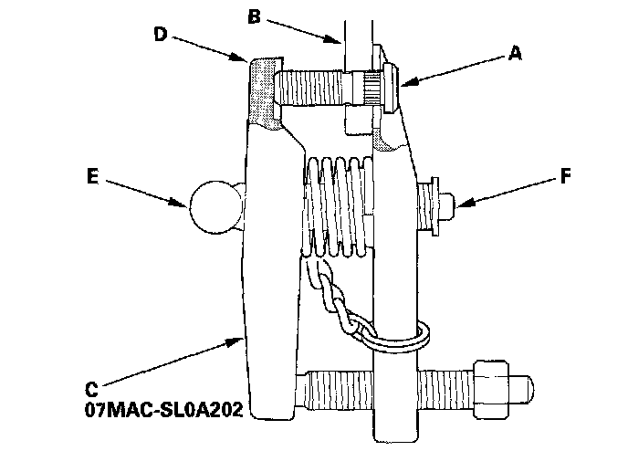
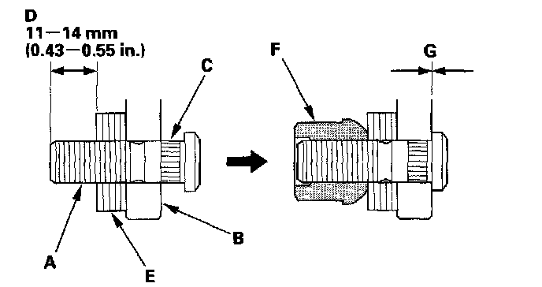
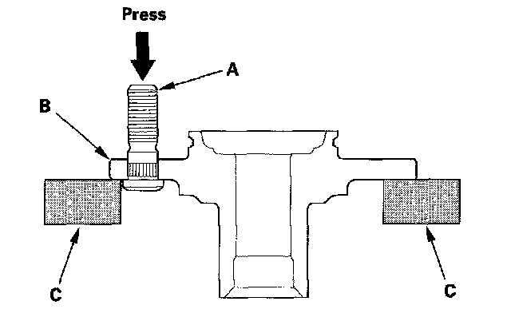

Wheel Stud / Lug Nut: Service and Repair
Wheel Bolt ReplacementSpecial Tools Required
Ball joint remover, 28 mm 07MAC-SLOA202
NOTICE:
^ Do not use a hammer or air or electric impact tools to remove and install the wheel bolts.
^ Be careful not to damage the threads of the wheel bolts.
Front (except Si model) and Rear
1. Raise the vehicle, and support it with safety stands in the proper locations.
2. Remove the brake disc or drum.
3. Separate the wheel bolt (A) from the hub (B) using the ball joint remover (C), and keep the jaw (D) of ball joint remover vertical against the wheel bolt.
NOTE:
^ If the angle of the remover against the wheel bolt is not square, readjust the ball joint remover by turning the head (E) of the adjusting bolt (F).
^ Before installing the new wheel bolt, clean the mating surface on the bolt and the hub.

4. Insert the new wheel bolt (A) into the hub (B) while aligning the splined surfaces (C) on the hub hole with the wheel bolt. Adjust the measurement (D) with washers (P/N 94101-12800 or equivalent) (E), then install a nut (P/N 90304-SC2-000 or equivalent) (F) hand-tight.
NOTE:
^ Degrease all around the wheel bolt and the threaded section of the nut.
^ Make sure the wheel bolt is installed vertically in relation to the hub disc surface.
^ Do not install the nut and washers that have been used as tools on a vehicle.

5. Tighten the nut until the wheel bolts is drawn fully into the hub. Do not exceed the maximum torque limit. Make sure there is no gap (G) between the bolt and the hub.
Limited torque: 108 Nm (11.0 kgf-m, 79.6 lbf-ft) max.
6. Install the brake disc or disc/drum.
NOTE:
^ If you can not tighten the wheel nut to the specified torque value when installing the wheel, replace the front hub or rear hub bearing unit as an assembly.
^ Before installing the wheel, clean the mating surfaces of the brake disc and the inside of the wheel.
Front (Si model)
1. Remove the front hub.
2. Separate the wheel bolt (A) from the hub (B) using a hydraulic press. Support the hub with hydraulic press attachments (C) or equivalent tools.
NOTE:
^ Before installing the new wheel bolt, clean the mating surface on the bolt and the hub.
^ The illustration shows a front hub.

3. Insert the new wheel bolt into the hub while aligning the splined surfaces on the hub hole with the wheel bolt.
NOTE:
^ Degrease all around the wheel bolt and the threaded section of the nut.
^ Make sure the wheel bolt is installed vertically in relation to the hub disc surface.
4. Install the wheel bolt using a hydraulic press until the wheel bolt shoulder is fully seated.
5. Install the front hub.
NOTE: If you can not tighten the wheel nut to the specified torque value when installing the wheel, replace the front hub or rear hub bearing unit as an assembly.